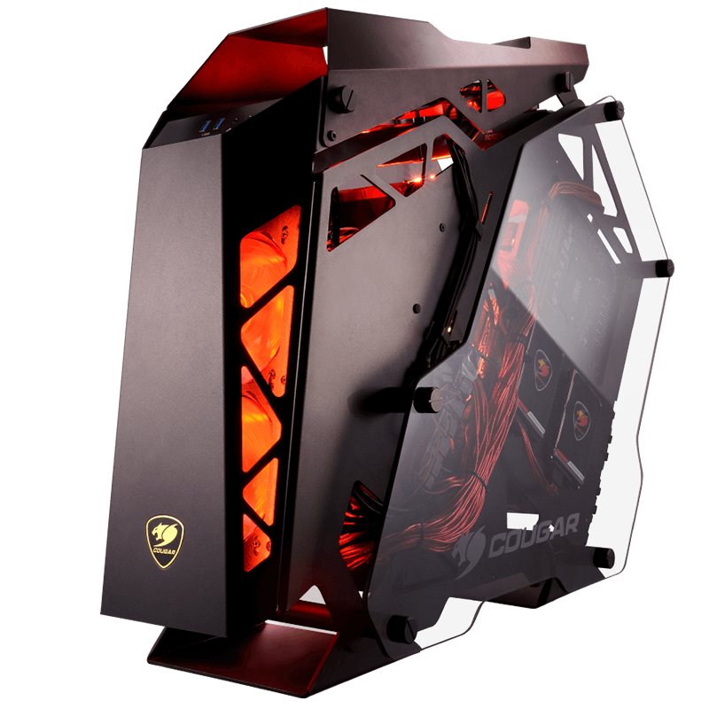

Cuando hablamos de Pc lo hacemos siempre refiriéndonos al mundo de la informática. PC es la abreviatura de Personal Computer (en inglés por supuesto), que significa ordenador personal. Esto sitnifica que cuando vemos escrito PC en una frase se está refiriendo a nuestro ordenador, pero no solo a la torre, sino al conjunto completo que se compone de la torre o CPU, altavoces, monitores, teclado, ratón, etc. Todo lo que forma el equipo que utilizamos se conoce como PC
 Más InformaciónPS5 es la nueva generación de consolas domésticas de Sony, la sucesora de PS4 y PS4 Pro. La máquina promete revolucionar el diseño de los juegos y la experiencia con un almacenamiento ultrarápido SSD y nuevas funcionalidades del DualSense, el pad que acompaña a la consola. La compañía japonesa ha detallado los componentes internos de PS5, su prometedor sistema de sonido, la retrocompatibilidad y algunos de los primeros títulos que veremos a finales de 2020 y en 2021.
 Más Información
Más Información
Xbox, en sus versiones Series X y Series S, son una próxima línea de videoconsolas de sobremesa desarrolladas por Microsoft y la cuarta generación de la familia de consolas Xbox. La familia de consolas, conocida colectivamente como "Project Scarlett"1 y revelada por primera vez en el E3 2019, incluye la Xbox Series X de gama alta, revelada en The Game Awards 2019 y cuyo nombre en código es "Project Anaconda", y la Xbox Series S de menor costo, anunciada en septiembre de 2020 y cuyo nombre en código es "Project Lockhart". Ambas consolas están programadas para lanzarse el 10 de noviembre de 2020.2 Competirán con la Nintendo Switch de Nintendo y PlayStation 5 de Sony, dando inicio a la novena generación de videojuegos.
 Más Información
Más Información